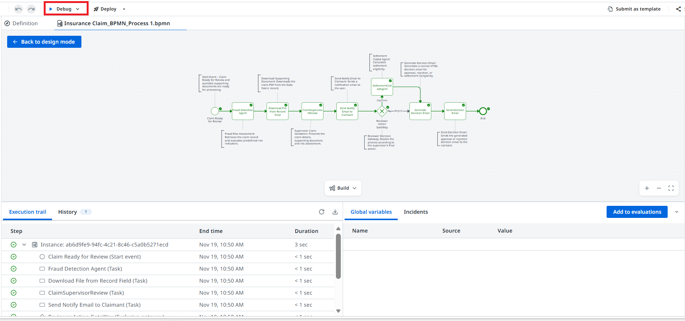
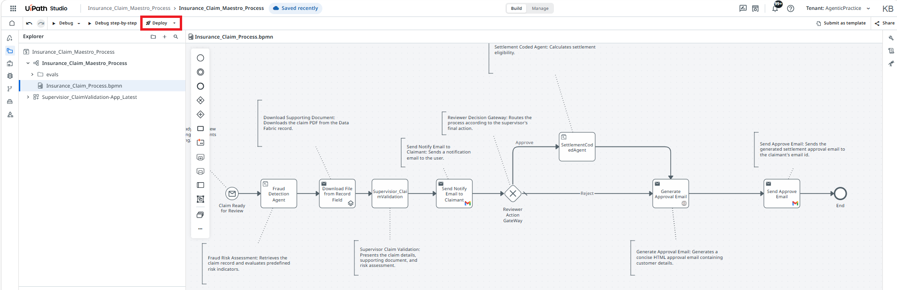
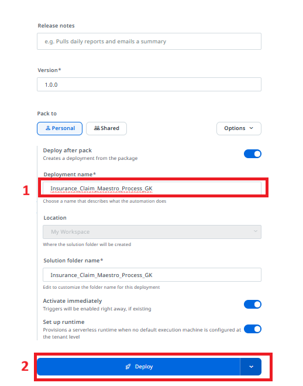
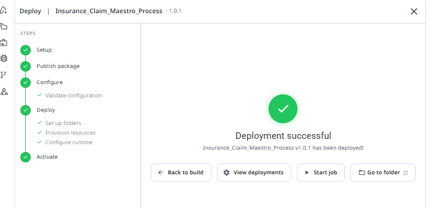
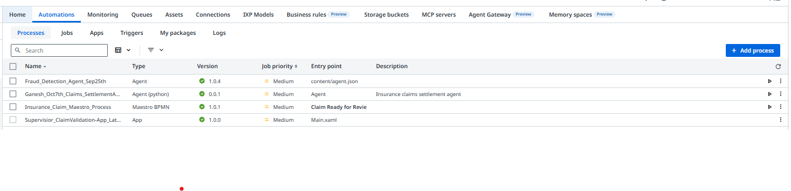

Debug and Deploy the Solution
Every task is configured. Run the whole process in Debug, test both decision paths, then deploy the complete Insurance_Claim_Solution.
Debug the full process
Open Insurance_Claim_MAESTRO and click Debug. Start it with a real claim record (one you submitted with the Insurance Claim Agent). Every task turns green in the canvas and is listed in the Execution trail; open Global variables to check each task's outputs.

Test both decision paths
| Test | How | Expected |
|---|---|---|
| Eligible claim | Approve a NonFraudulent claim on an Active policy | eligible = true; the approval email with the settlement amount is sent. |
| Not eligible | Approve a claim with a SUSPEND / REJECT fraud verdict or an inactive policy | eligible = false; the additional-document email is sent, no approval email. |
| Rejected | Click Reject in the supervisor app | The gateway skips settlement; the not-approved email is sent. |
Deploy the solution
When end-to-end testing succeeds, click Deploy in the Studio Web toolbar for Insurance_Claim_Solution. The deployment includes the Insurance Claim Agent, the Claim App, Maestro, the Fraud Detect Agent and the Settlement Coded Agent together.

Enter a unique Deployment name (for example Insurance_Claim_Solution_YourInitials), keep Deploy after pack, Activate immediately and Set up runtime switched on, and click Deploy.

uip codedagent deploy --my-workspace for the course solution. The solution is the deployment boundary. If your organization uses a local .uipx workflow instead, refresh resources, pack, publish and deploy the .uipx with the solution CLI.Insurance_Claim_Solution from Studio Web.Confirm the deployment
Wait for the stages Setup, Publish package, Configure, Deploy and Activate to show a green check and Deployment successful.

In Orchestrator open Automations → Processes and confirm the Maestro process (entry point Claim Ready for Review), the agents and the supervisor app are listed.

Trigger the live process
The deployed process now starts by itself. Submit a new claim through the Claim App (or update an IntakeClaimEntity record and set DecisionInput to READY_FOR_REVIEW). The start event fires, the Fraud Detect Agent runs, and the claim reaches the supervisor as a task.